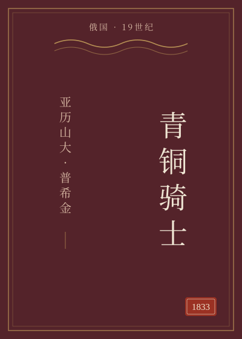
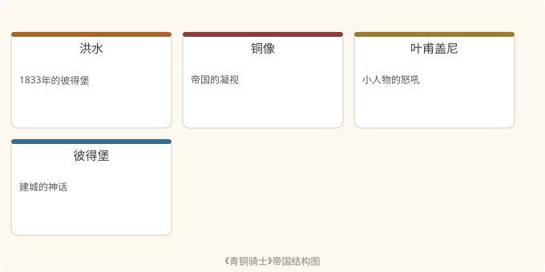

青铜骑士
一、基本信息
| 作者 | 普希金 |
|---|---|
| 成书/出版 | 1833年写成（通说待核；作者页 B143 口径：major_works 载'青铜骑士'；1837年身后刊出说） Aleksandr Pushkin — Encyclopaedia Britannica（百科全书） |
| 国别/地区 | 俄国 |
| 时代 | 近代 · 19世纪 |
| 体裁 | 叙事诗 |
| 语言 | 俄语 |

《青铜骑士》帝国结构图（主题·结构图）
二、创作背景
作者页（B143）：普希金 major_works 载'青铜骑士'（B143 作者页定位，详见 aonijin 条核对）。
题材（通说待核）：1833年彼得堡大洪水中的小公务员叶甫盖尼与彼得大帝铜像的对峙——'彼得堡故事'之诗。
三、内容脉络
洪水中的失去——叶甫盖尼对铜像的怒吼与追杀幻觉（通说待核）。
四、主要人物表
| 人物 | 身份 | 说明 |
|---|---|---|
| 叶甫盖尼 | 小公务员 | （通说待核） |
| 青铜骑士 | 彼得大帝像 | 帝国的化身（通说待核） |
五、主题与艺术特点
- 帝国与小人物（通说）。
- 彼得堡的建立神话（通说待核）。
- 叙事诗的交响（通说待核）。
六、影响与评论
- 作者页：普希金名诗（B143 作者页口径）。
Aleksandr Pushkin — Encyclopaedia Britannica（百科全书） - 果戈理、陀思妥耶夫斯基的'彼得堡主题'源头（通说待核）。
Aleksandr Pushkin — Encyclopaedia Britannica（百科全书）
七、阅读建议
难点
- 彼得堡建城史。
- 叙事诗的语调转换。
- 《青铜骑士》（收于《普希金全集》，通说待核）。
- 俄文原版（公有领域）。
与《鲍里斯·戈都诺夫》合读。
八、待核实
- 1833年波尔季季？——不：1833年写成、身后刊出（《现代人》1837说）核对。
- 叶甫盖尼人名核对。
- '彼得堡故事'谱系待核。
本页主要来源
普希金的其他收录作品：叶甫盖尼·奥涅金